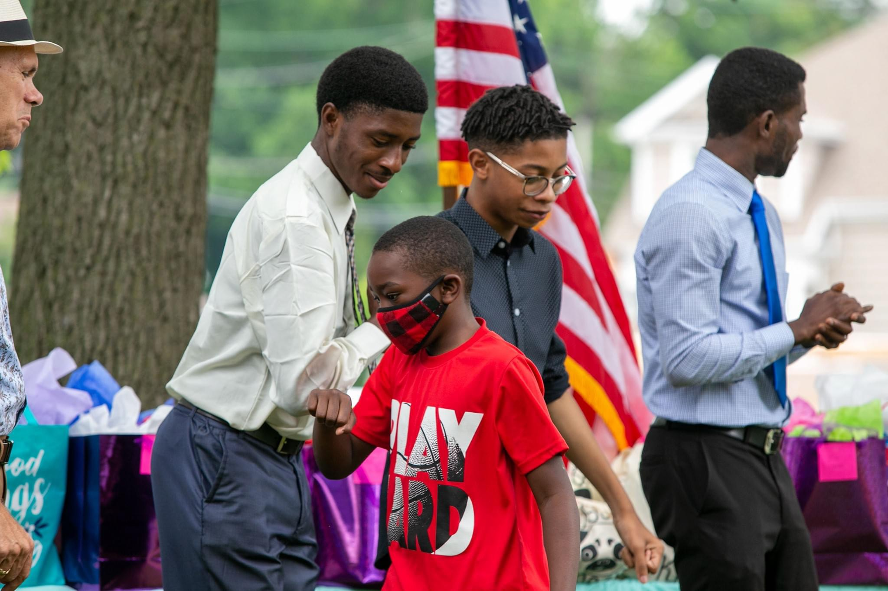
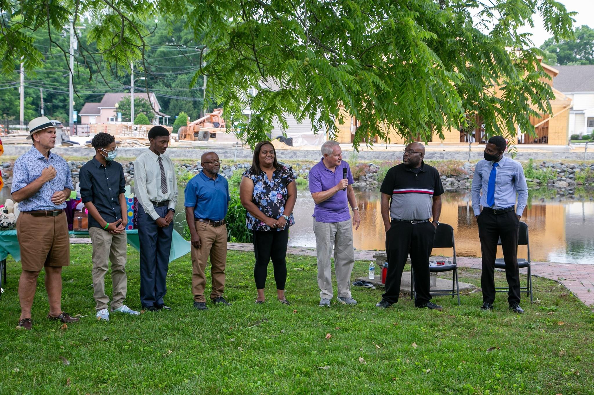
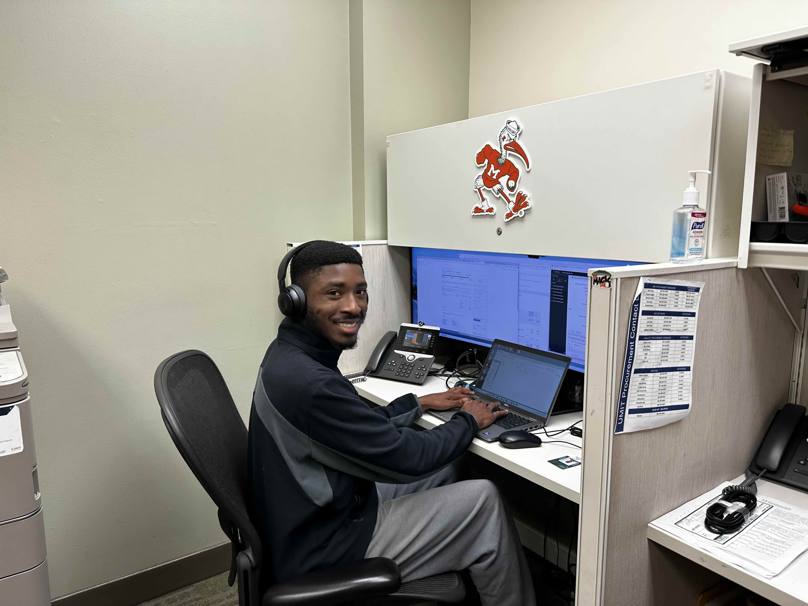

Founder and Owner of WebEaze
Product
Frontend
Client delivery
Since October 2024, I have been the owner of WebEaze, a small web design company that I founded, specializing in creating custom websites for small businesses and individuals.
I have developed a strong foundation in Python, HTML, CSS, Java, and JavaScript to create responsive, user-friendly websites that meet the unique needs of my clients. I have also honed my communication and project management skills and learned the importance of time management. Looking ahead, the company will remain small and slow paced to focus on academics and career goals.

Internship at Delaware Elevator, Inc.
IT
Collaboration
Problem solving
During my internships at Delaware Elevator in the summers of 2023 and 2024, I strengthened collaboration and critical thinking by resolving conflicts and using a structured approach to implement desired solutions.
I developed strong collaboration skills by working closely with other teams to resolve conflicts efficiently and address challenges through problem-solving approaches. This allowed me to evaluate problems from multiple perspectives and implement effective solutions.
Alpha Kappa Psi Membership
Leadership
Business
Community
Since November 2022, I have been a proud member of Alpha Kappa Psi (AKPsi), the premier professional business fraternity.
From January 2025 to May 2025, I served as the Administrative Director for the fraternity, tracking chapter attendance, communicating member status, recording meeting minutes, and attending business events that enriched my skills.
Through AKPsi, I have participated in professional workshops, networking events, and mentorship programs that honed my communication, collaboration, and problem-solving abilities.

Spotify Community Star
Community
Support
Publishing
Since August 2018, I've been an active member of the Spotify Community, where users seek support, share ideas, and collaborate. As a Super User, I assist with issues ranging from troubleshooting to account transfers and platform features.
Each year, I earn the opportunity to visit Spotify's headquarters to meet fellow users and teams at Spotify. Published articles include:
You can explore my Community profile here.

Youth Board Member at the ARK Educational Resource Center
Education
Leadership
Service
From September 2019 to August 2022, I served as a Youth Board Member for The ARK. I participated in monthly board meetings, contributed to strategies aimed at reducing the high school dropout rate, and supported student success through tutoring programs.
I also attended annual banquets and award ceremonies to celebrate student achievements. This experience strengthened my leadership and communication skills while deepening my understanding of challenges facing students in my community.


Lab Technician at the University of Miami
IT operations
Security
Support
Since September 2022, I have managed PC encryption and maintained loaner inventory at the University of Miami, ensuring secure and efficient technology operations.
This role strengthened my time management, collaboration, and problem-solving skills while balancing responsibilities as a full-time student.

User Experience Research and Mobile Design
UX
Research
Feedback
A crucial part of computing involves creating innovative software solutions that enhance the user experience. I started freelance website testing through UserTesting, providing feedback on prototypes and mockups to help teams build better websites.
This experience strengthened my critical thinking and public speaking skills by interacting with real representatives from companies seeking feedback from their users.